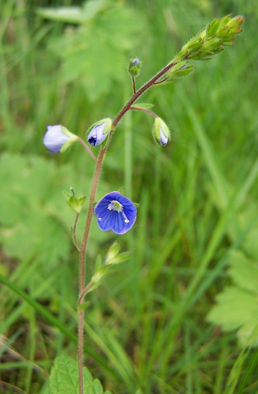

| https://fleursauvageyonne.github.io/ |

et d'ailleurs
|

Veronica chamaedrys L., 1753, la véronique Petit-chêne ou fausse germandrée. |
Le 4 février, en France et peut-être ailleurs dans le Monde, une coutume est de souhaiter bonne fête à celles qui se prénomment Véronique.
Pourquoi ne pas en profiter pour découvrir le genre de fleurs nommé Veronica, le plus important des Plantanginaceae ? Il appartient à la sous-famille des Veroniceae. |
 Veronica - Victor Iturbe (1936-1987) el piruli Veronika - Jean-Pax Méfret Veronica - Victor Iturbe (1936-1987) el piruli Veronika - Jean-Pax Méfret
Comptine pour bébé avec le prénom Véronique - Dors, dors petit ange |
Bienvenue
Welcome / Bienvenidos / Välkommen / Benvenuto
добро пожаловать / مَرْحَبا /
Chào mừng
いらっしゃいませ / 欢迎
pարի գալուստ

|
| FLeurs SauVages de l'Yonne et d'ailleurs, nommé plus couramment en abrégé FLSVY, est un modeste herbier, initialement icaunais c'est-à-dire de l'Yonne (un département français dont le chef-lieu est Auxerre)
|
 |
| Cet herbier a été imaginé en 2005 par Claude Richard, botaniste amateur et randonneur, pour que les botanistes amateurs débutants et curieux (ignorant tout de la phytosociologie, de la génétique végétale ou de l'horticulture) puissent découvrir, en cliquant sur une pastille colorée

une fleur, ses fruits, ses graines, parfois ses racines et éventuellement
  sa toxicité sa toxicité après l'avoir reconnue rapidement grâce à sa couleur, même imprécise, ou s'assurer encore plus rapidement qu'un nom latin ou français d'une fleur qu'ils ont en mémoire correspond bien à celle qu'ils ont devant les yeux.
Une illusion sans doute quand on pense, entre autres, aux 83 synonymes de cette Poaceae qu'est le pied de poule, Dactylis glomerata L., 1753 Poaceae qu'est le pied de poule, Dactylis glomerata L., 1753
|
FLeurs SauVages de l'Yonne et d'ailleurs toujours sans abandonner l'idée que la paix est une fleur et que les graines s'oublient, vous invite à découvrir, dans les sols, la vie cachée et la mort de tant d'espèces, vivantes ou qui le furent, sans lesquelles les fleurs ne pourraient exister, elles dont les horloges circadiennes sont différentes des nôtres. |
|
►  ► ►  |
Conception/maintenance informatiques
Annick Jani
Mise à jour : FÉVRIER 2026
 2005 à 2025 2005 à 2025 |
|